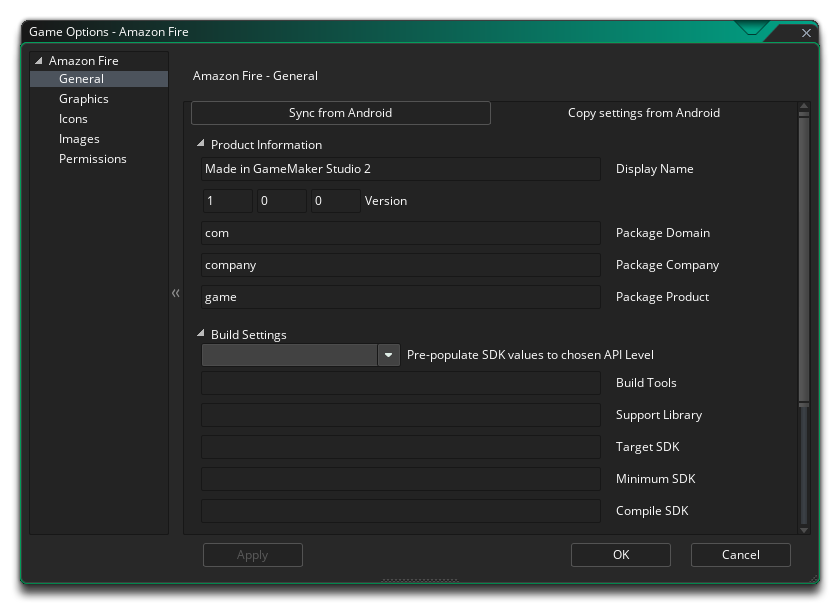
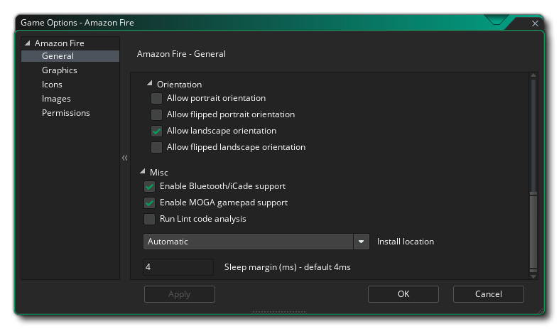

Esta sección describe las diferentes opciones disponibles para usted que controlan cómo se compilarán sus proyectos de juegos de Amazon Fire. Las diferentes secciones son:

La primera parte de la sección General está dedicada a la Información del producto y la Configuración de compilación. Debe completar la información del producto, que incluye el nombre para mostrar de los proyectos, su información del paquete, que consta de un dominio, compañía y producto. La información del paquete solo puede estar formada por letras de la A a la Z y los números del 0 al 9, sin símbolos u otros caracteres especiales, ni debe tener caracteres en mayúscula. Estos detalles se utilizarán para generar una ID de paquete con el formato " com.company.myappname ".
NOTA: Si ya ha configurado las Opciones de juego de Android, puede hacer clic en el botón "Sincronizar desde Android " en la parte superior para transferir la información relevante del objetivo de Android al Amazon Fire.
A continuación, deberá configurar las versiones Herramientas de compilación y Biblioteca de soporte, así como las versiones Destino, Mínimo y Compilar SDK. Las Herramientas de compilación y la Biblioteca de soporte se usan cuando GameMaker Studio 2 construye su juego para el objetivo de Android y deben configurarse en los valores adecuados en función de las herramientas que haya instalado utilizando el Android SDK Manager o Android Studio.El SDK de Target indica que ha probado su aplicación en (hasta e incluida) la versión que especifique aquí. Esto es simplemente para darle al Android operativo Android una idea de cómo debe manejar su aplicación en términos de características del sistema operativo. Para todos los propósitos prácticos, la mayoría de las aplicaciones querrán establecer Target SDK en la última versión publicada de la API (tal como se usa en la configuración Compilar SDK). Esto asegurará que su aplicación se vea lo mejor posible en los dispositivos Android más recientes.
La versión del SDK mínimo es el nivel de API mínimo que ejecutará su proyecto. Desde agosto de 2018, Google ha hecho que el nivel de API 26 sea el mínimo requerido, pero si agrega extensiones, es posible que requieran un nivel de API mínimo más alto.
La versión de Compile SDK es la versión de la API con la que se compila el proyecto. Esto significa que puede usar Android características de la API de Android incluidas en esa versión de la API. Si prueba y usa las características de API 16, por ejemplo, pero configura Compile SDK 15, obtendrá un error de compilación. Sin embargo, si configura Compile SDK en 28, puede seguir ejecutando la aplicación en un dispositivo API 23 (como también en todas las demás versiones anteriores).
Puede seleccionar una de las configuraciones de destino predefinidas haciendo clic en los valores del SDK de rellenado previo al botón de nivel de API elegido, que abrirá una lista de diferentes API para elegir. Al seleccionar cualquiera de ellos, se rellenarán todos los archivos SDK con los valores adecuados que luego podrá usar o editar según sea necesario.
NOTA: debe tener instaladas las API adecuadas en el Android SDK Manager o en Android Studio para que sus proyectos se compilen correctamente.
La segunda parte de la sección General cubre las diferentes Orientaciones en las que se puede ejecutar tu juego para la mejor experiencia de usuario. Las opciones disponibles son:
- Paisaje
- Retrato
- Paisaje volteado
- Retrato volteado
Finalmente tienes las siguientes opciones misceláneas:
- Habilitar el soporte de Bluetooth / iCade: esto agregará soporte para bluetooth o iCade gamepads a su proyecto de juego. Esto está predeterminado.
- Habilitar la compatibilidad con MOGA gamepad: Esto habilitará la compatibilidad con los controladores MOGA. Tenga en cuenta que se accede a todas las funciones de MOGA a través de una extensión, y cuando marque esta opción por primera vez, se le solicitará que descargue e instale la extensión de MOGA desde Marketplace. Esta opción está apagada por defecto.
- Ejecutar análisis de código de pelusa: cuando esta opción está marcada, las herramientas de compilación ejecutarán un análisis de código de pelusa en el proyecto a medida que se construye, brindando una verificación de errores más profunda y mostrando más información en la ventana de resultados mientras se compila el proyecto (un REGISTRO el archivo también se creará, con la ruta al archivo que se muestra al final de la compilación en la ventana de resultados). Tenga en cuenta que no todo lo que se marca con un análisis de pelusa como error es necesariamente problemático para su juego, y tenerlo habilitado puede significar que su juego ya no se compila, aunque cuando esté apagado, se compilará y funcionará bien. Esencialmente, esto es solo para la depuración, y la opción está desactivada de forma predeterminada.
- Ubicación de instalación: Aquí puede establecer la ubicación de instalación predeterminada para su juego. Esto se puede establecer en Automático, en cuyo caso el juego se instalará en la ubicación elegida por el usuario en su dispositivo, o se puede configurar en Preferir externo, que siempre intentará instalar el juego en el almacenamiento externo del dispositivo.
También puede establecer el margen de suspensión de Amazon Fire aquí. Esta opción está relacionada con la reducción del tartamudeo al ejecutar tu juego en sistemas específicos. Básicamente, si su juego se ejecuta más rápido que la velocidad de su sala, GameMaker Studio 2 se "suspenderá" durante el tiempo restante, pero este modo de espera puede ser bastante impreciso y, a menudo, puede dejar de dormir más tiempo de lo necesario, lo que hace que su marco se demore más. causa el tartamudeo. Para solucionar esto, podemos dormir por menos tiempo, y luego sentarnos en un bucle estrecho durante el resto del tiempo para hacerlo más preciso, aunque el problema de estar en un bucle es que aumenta el uso de la CPU, lo que a su vez puede haga que la temperatura de la CPU aumente y que su dispositivo use más batería. De forma predeterminada, este valor se establece en 4, y en el 99,99% de los casos no tendrá problemas con esto, pero para los dispositivos de gama baja o para los dispositivos con muchos procesos en segundo plano que se ejecutan, es posible que esta no sea una solución ideal. de 5 a 10 puede ser requerido. Sin embargo, tenga en cuenta que esto es en gran medida una configuración específica del dispositivo y que lo que funciona en su dispositivo de compilación puede no ser apropiado para otro usuario, y como tal, en caso de duda, déjelo en 4
Aquí puede cambiar los siguientes detalles relacionados con la forma en que se mostrará su juego, con las siguientes opciones disponibles:
- Interpolar colores entre píxeles: activa la interpolación, que básicamente "suaviza" los píxeles. para gráficos de píxeles nítidos, debería estar apagado, pero si tiene buenas combinaciones alfa y gráficos de bordes suavizados, es mejor dejarlo encendido. El valor predeterminado es desactivado.
- Profundidad del color de la pantalla: se puede usar para establecer la profundidad del color para renderizar en 16 bits o 24 bits. Esto afectará la compatibilidad con algunos dispositivos más antiguos si se establece en 24 bits, y también aumentará el ashmem que se necesita (esta es la memoria compartida en los dispositivos Amazon Fire).
- Escala: aquí puede seleccionar escalar el lienzo de dibujo manteniendo la relación de aspecto dentro de la pantalla del dispositivo, agregando "relleno" alrededor de los bordes para que se ajuste a la pantalla, o puede seleccionar que el lienzo de estiramiento se estire para que se ajuste.
Finalmente, existe la opción de establecer el tamaño de la página de textura. El tamaño predeterminado (y el más compatible) es 2048x2048, pero puede elegir desde 256x256 hasta 4096x4096. También hay un botón marcado Vista previa que generará las páginas de textura para esta plataforma y luego abrirá una ventana para que pueda ver cómo se ven. Esto puede ser muy útil si desea ver cómo están estructuradas las páginas de textura y evitar tener páginas de textura más grandes (o más pequeñas) de lo necesario.
NOTA: ten en cuenta que cuanto mayor sea el tamaño de la página de texturas, menos compatible será tu juego.
Esta sección le permite agregar varias imágenes de iconos que su proyecto necesitará para las diferentes páginas de la tienda y dispositivos. Todas las imágenes de iconos deben crearse como archivos PNG de 24 bits de los tamaños apropiados dados.
Vale la pena señalar que GameMaker Studio 2 tiene una herramienta Project Image Generator que se puede usar para crear automáticamente todos los iconos necesarios para todas las diferentes plataformas de destino en las que se está compilando el juego. Si utiliza esta herramienta, debe revisar las imágenes creadas para asegurarse de que sean lo que necesita.
Aquí puede agregar una pantalla de bienvenida a su archivo final del juego, tanto para el modo horizontal como para el retrato, que se mostrará mientras el juego se carga en el dispositivo. Esta pantalla debe ser un archivo PNG de 24 bits y se recomienda que tenga el mismo tamaño que la primera sala (o vista) de tu juego. Si necesita que se muestre la pantalla de inicio durante un tiempo específico, también puede configurarlo aquí de 0 a 10 segundos (el tiempo predeterminado de 0 significa que solo se mostrará durante la carga del activo).
Vale la pena señalar que GameMaker Studio 2 tiene una herramienta Project Image Generator que se puede utilizar para crear automáticamente todas las imágenes necesarias para todas las diferentes plataformas de destino en las que se está compilando el juego. Si utiliza esta herramienta, debe revisar las imágenes creadas para asegurarse de que sean lo que necesita.
Desde esta pestaña puedes cambiar algunos de los permisos que tu juego puede solicitar dentro de Amazon Fire Manifest. GameMaker Studio 2 asignará permisos automáticamente según sea necesario, sin embargo, es posible que necesite un permiso para su juego que no haya sido asignado correctamente (por ejemplo, cuando use extensiones personalizadas) en cuyo caso, marque la casilla de permiso requerida. La siguiente lista resume los que están disponibles:
- WRITE_EXTERNAL_STORAGE: Permitirá que su juego escriba en almacenamiento externo.
- READ_PHONE_STATE: Permitir acceso de solo lectura al estado del teléfono.
- ACCESS_NETWORK_STATE: Permite que tu juego acceda a información sobre redes.
- INTERNET: Permita que su juego abra sockets de red.
- BLUETOOTH: permitirá que tu juego se conecte a dispositivos Bluetooth emparejados.
- GRABAR AUDIO: Permitirá que su juego grabe la entrada de audio del micrófono.
NOTA: Si no está seguro de necesitarlos, probablemente debería dejarlos sin marcar de forma predeterminada y dejar que GameMaker Studio 2 encargue de los permisos para su juego.